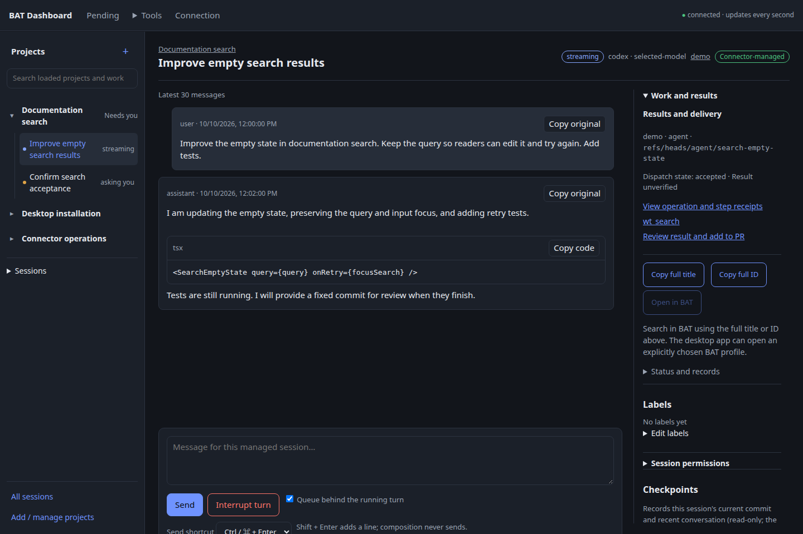
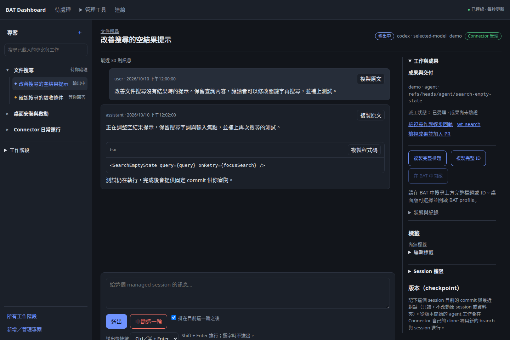
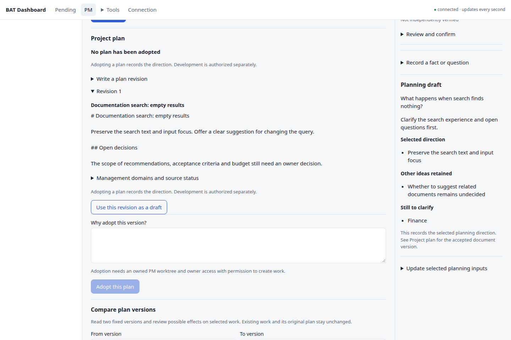
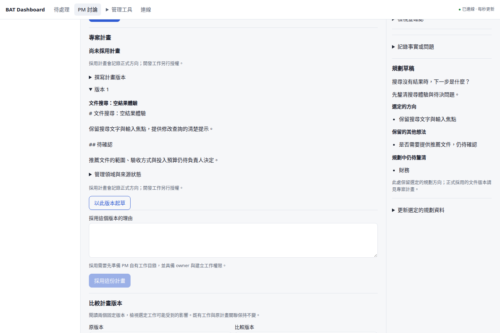
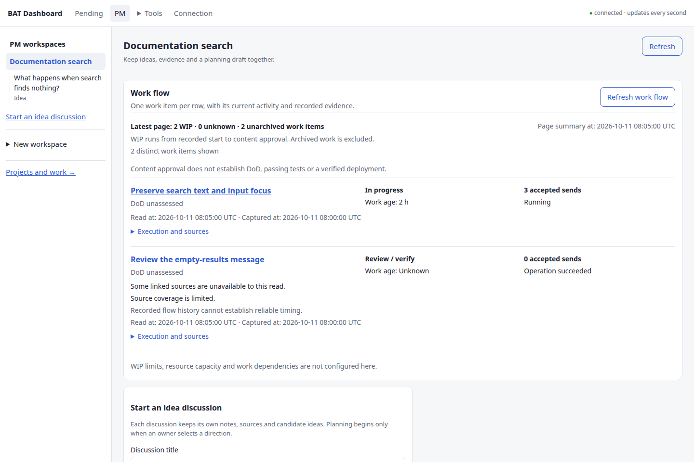
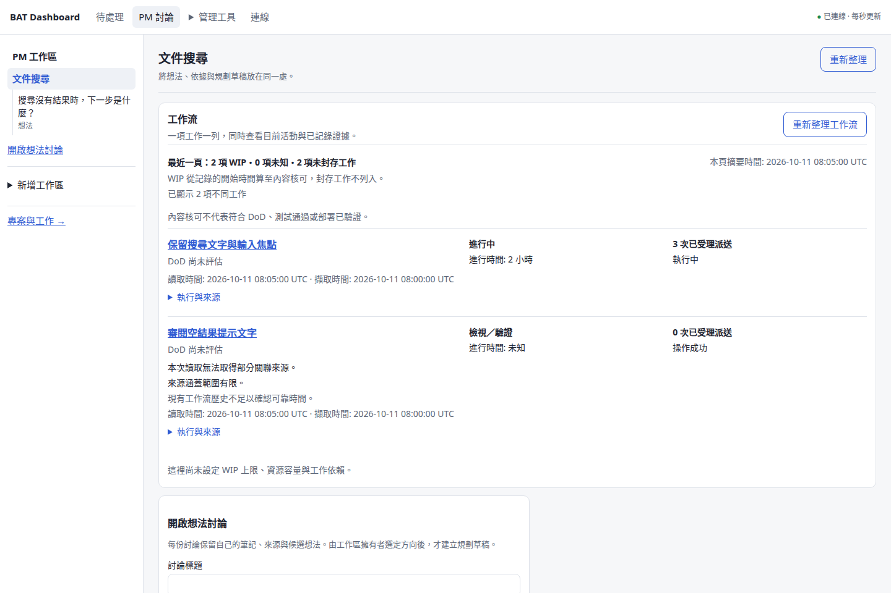
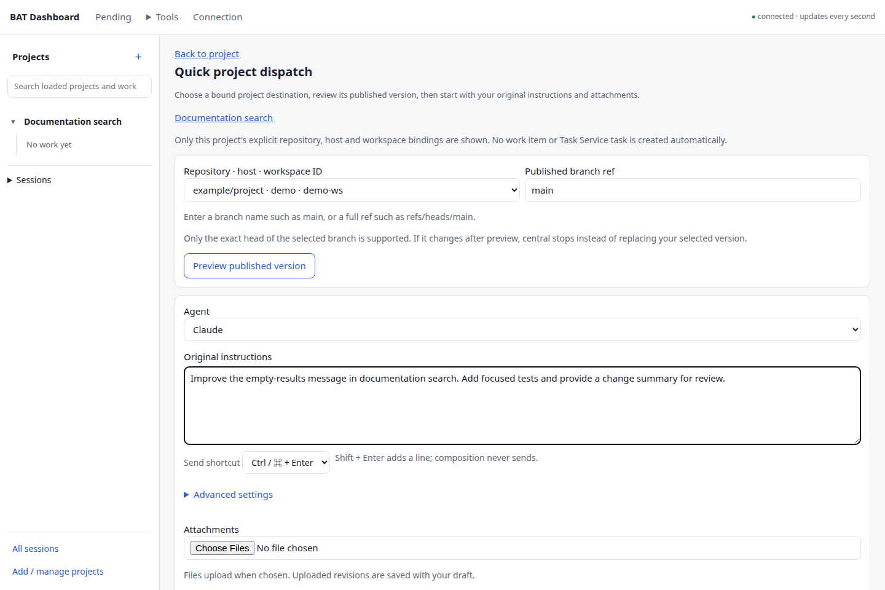
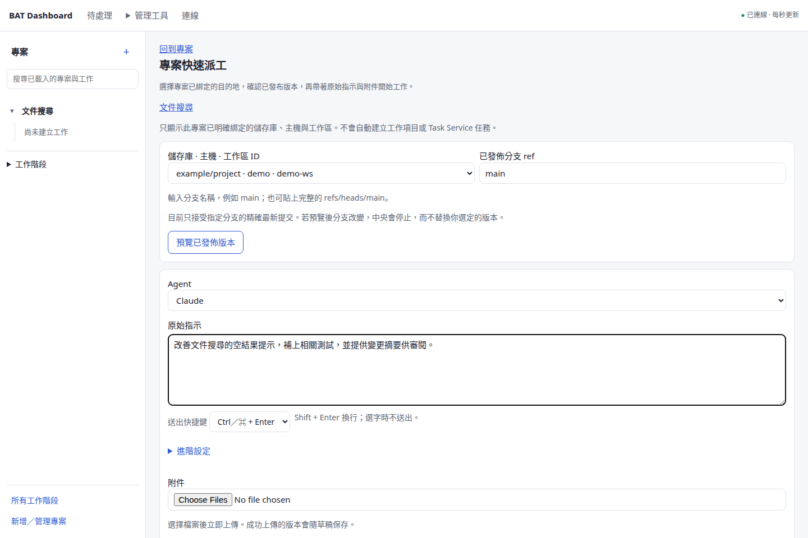

Plans and sources計畫與來源
Versioned documents distinguish a suggestion, an adopted scope and later changes.版本化文件分清建議、已採用範圍與後續變更。
Read the contract →閱讀設計合約 →Project management for agent work讓 Agent 工作接上專案管理
Discuss the goal, review the plan and connect agent work to delivery evidence. A shared Web and desktop workspace keeps decisions, progress and maintenance in view.討論目標、審閱計畫，把 Agent 工作接回交付證據。在共用的 Web 與桌面工作空間，掌握決策、進度與後續維護。
Inside the workspace介面導覽
The actual shared frontend, captured from main c0027daa on October 12, 2026. All examples use synthetic data.以下為 2026 年 10 月 12 日從主線 c0027daa 拍攝的共用介面，全部使用合成展示資料。








A session going quiet does not establish completion.session 安靜下來，不能直接判斷已完成。
Record the criterion, result, evidence and responsible reviewer.保留條件、結果、證據與負責審閱者。
Read back an uncertain operation before starting another.結果未知時先查回原操作，再決定下一步。
One small project first先從小專案開始
Try login and password reset as a first scope. Each decision and result retains its original project context.以登入與忘記密碼作為第一段範圍，讓每次決策與成果都保留原專案脈絡。
Save the goal, constraints, sources and open questions in an Idea thread.在 Idea 討論保存目標、限制、來源與未決問題。
Prepare the PM's own worktree. Review a proposal and explicitly adopt its fixed requirements.準備 PM 自有 worktree，審閱提案後明確採用固定需求。
Select engineering packages and destinations. Agents work in their own managed resources.選工程包與目的地，讓 Agent 在自己的 managed 資源工作。
Use original verification evidence and a responsible quality review against acceptance criteria and DoD.使用原驗證證據，由責任審閱者對照接受條件與 DoD 評估品質。
Review the integration and PR. Keep merge, deployment and release-baseline evidence distinct.審閱整合及 PR，分開記錄 merge、部署與發布基準證據。
Adopt repair bounds and a schedule. Review findings and results, then bring the next decision into Idea.採用修復界線與排程，檢視發現及結果，再將下一個決策帶回 Idea。
Passing tests does not automatically accept a requirement. A plan does not authorize execution, and a finding does not authorize repair. M4 is validating the joined lifecycle; follow the progress report for its current limits.測試通過不會自動接受需求，計畫不直接授權執行，finding 也不直接授權修復。M4 正在驗證整條生命週期，現況與限制請看進度報告。
Follow the PM guide →閱讀 PM 使用指南 →Follow the PM guide →閱讀 PM 使用指南 →The daily work日常工作
Versioned documents distinguish a suggestion, an adopted scope and later changes.版本化文件分清建議、已採用範圍與後續變更。
Read the contract →閱讀設計合約 →Organize goals, commitments and work. Selected assessments preserve the result they evaluated.整理目標、承諾與工作；選定的評估保留它當時審閱的成果。
Read the contract →閱讀設計合約 →Sourced analysis prepares candidate changes and focused questions for review.有來源的分析整理候選變更與關鍵問題，供你審閱。
Read the contract →閱讀設計合約 →Connect fixed commits, original checks, quality reviews, PRs and deployment receipts.串起固定 commit、原始 checks、品質審閱、PR 與部署回執。
Read the contract →閱讀設計合約 →Adopted policies bound observations and repairs; reports retain findings and original results.已採用政策限制觀察與修復，報告保留發現與原始結果。
Read the contract →閱讀設計合約 →Read or export one fixed Brief as Markdown, HTML or SVG. Further document views and slides remain planned.讀取或輸出同一份固定 Brief 的 Markdown、HTML 或 SVG；其他文件視圖與簡報仍待完成。
Read the contract →閱讀設計合約 →Clear responsibilities清楚的分工
Project management builds on Connector, BAT and Fleet. Web and Tauri share the same product surface.專案管理建立在 Connector、BAT 與 Fleet 之上；Web 和 Tauri 使用同一份產品介面。
Manage selected SSH tunnels, route readiness, BAT profiles and sign-in choices. Rust and the existing PowerShell backend follow explicit ownership and migration rules.管理選定 SSH tunnels、路由就緒、BAT profiles 及登入選項；Rust 與既有 PowerShell backend 遵守明確的歸屬與遷移規則。
↓ Governed BAT operations ↓↓ 受控 BAT 操作 ↓
Keep using BAT desktop or mobile. Connector reads human sessions and worktrees; continuation creates new owned work.照常使用 BAT desktop／mobile；Connector 唯讀人工 session 與 worktree，接續時建立新的自有工作。
The PM and engineering agents retain their own workspaces, fixed source revisions and original operation links.PM 與工程 Agent 保留各自工作區、固定來源版本及原操作關聯。
Cross-host code synchronization uses explicitly bound repositories and published commits.跨主機程式碼同步使用明確綁定的 repository 與已發布 commit。
Desktop prepares one private local central. Explicitly join an existing central when needed; connection failure never replaces its database.桌面準備一套私人本機中央，需要時明確加入既有中央；連線失敗不會另造資料庫。
Bounded PM analysis runs on an eligible Linux central or BAT host. A Windows/Mac client can use that route; installing its desktop app does not add a native coding adapter.有界 PM 分析在合格 Linux 中央或 BAT 主機執行。Windows／Mac client 可使用該路徑，桌面安裝本身不會增加一般原生 coding adapter。
Windows FleetWindows Fleet
Local connectivity and startup stay visible alongside project management.專案管理之外，本機連線與啟動控制仍有清楚入口。
Maintain selected tunnels and configured route fallbacks. Check TLS, BAT identity and central access before work.維持選定 tunnels 與已配置備援路由，工作前核對 TLS、BAT 身分及中央存取。
Read the guide →閱讀說明 →Choose background connections, BAT profile windows and Dashboard independently; retain the login picker or saved choices.背景連線、BAT profile 視窗、Dashboard 各自選擇，保留登入選擇器或已存選項。
Read the guide →閱讀說明 →Use public Rust configuration or explicitly migrate an existing PowerShell setup after proving the old owner stopped.使用公開 Rust 設定，或證明舊 owner 已停止後明確遷移既有 PowerShell 配置。
Read the guide →閱讀說明 →Credential Manager, files and tray controls remain available. Tailscale sign-in and fixed central bootstrap use configured local facilities.保留 Credential Manager、檔案及系統匣操作；Tailscale 登入與固定中央 bootstrap 使用已配置的本機能力。
Read the guide →閱讀說明 →Start with a reviewed build從核對過的版本開始
Desktop packages include Python and prepare the local central. Account trust and work destinations remain explicit choices.桌面包包含 Python 並準備本機中央；帳號信任與工作目的地仍由你明確選擇。
Choose a successful main platform build and match the artifact to its source commit and validation records.選成功的 main 平台建置，核對 artifact 的來源 commit 與驗證紀錄。
Complete BAT trust, repository binding and verification setup. Advanced users can join an existing central.完成 BAT 信任、repository 綁定與驗證設定；進階使用者可加入既有中央。
Start a small PM scope, inspect its original evidence and record what still needs a decision.從小範圍 PM 工作開始，檢視原始證據，記錄仍需決定的事項。
GitHub Actions artifacts can expire and may require sign-in. These packages are development validation builds, not a stable signed update channel. Closing the UI leaves central work running.GitHub Actions artifacts 會到期，也可能要求登入。這些是開發驗證包，尚非穩定的簽章更新通道；關閉 UI 仍保留中央工作。
Entry points使用入口
| Entry入口 | Local facilities本機能力 | Current boundary目前界線 |
|---|---|---|
| Browser瀏覽器 | Shared UI and authenticated central access共用 UI 與中央認證存取 | No native Fleet or credential vault.沒有原生 Fleet 或 credential vault。 |
| Windows x64Windows x64 | NSIS, bundled central, tray, Fleet and Credential ManagerNSIS、打包中央、系統匣、Fleet 與 Credential Manager | Unsigned validation package.未正式簽署的驗證包。 |
| Mac Apple Silicon / IntelMac Apple Silicon／Intel | DMG, bundled central, menu bar and KeychainDMG、打包中央、選單列與 Keychain | Ad-hoc signing; Windows Fleet is not ported.ad-hoc 簽署；Windows Fleet 未移植。 |
| LinuxLinux | Debian package and bundled centralDebian 套件及打包中央 | External-central native credentials are memory-only.外部中央的原生憑證只留記憶體。 |
Formal signing, Mac notarization, production updates and Linux persistent native credential storage are outside the agreed delivery.正式簽章、Mac 公證、正式更新通道與 Linux 原生憑證持久儲存，已排除於本次交付。
Ownership and recovery歸屬與恢復
Human sessions and worktrees remain read-only through Connector. Reading a source does not grant control of it.Connector 對人工 session 與 worktree 保持唯讀；能讀來源，不代表能控制來源。
The current principal, host policy, source access and original resource identity are checked before effects.效果執行前核對目前身分、主機政策、來源存取及原資源身分。
Keep the original operation and key while a result is uncertain. Query its evidence instead of dispatching another copy.結果未知時保留原 operation 與 key；查證據，避免再派一份工作。
Connector policy works with host accounts and confinement. It is not an operating-system sandbox.Connector 政策與主機帳號、隔離機制一起運作，本身不是作業系統 sandbox。
Current scope目前範圍
Read merged code, candidate checks and real-environment acceptance as separate records.分開看已合併程式、候選驗證與實際環境驗收。
Documentation文件
Packages, runtime prerequisites and one small project.套件、runtime 前提及一個小專案。
Connections, profiles, startup and native facilities.連線、profiles、啟動及原生能力。
Merged, candidate, tested and remaining scope.已合併、候選、已驗證及剩餘範圍。
Fixed versions, evidence, blockers and the next steps.固定版本、證據、阻擋與接續步驟。
Canonical skills, MCP/CLI and central operations.共用 skills、MCP／CLI 及中央操作。
Build the shared frontend and run the relevant checks.建置共用前端並執行相應檢查。
Practical questions使用前的問題
No. The Dashboard can connect to a configured central and BAT host. Coding work stays on the selected host; the browser's operating system does not determine runtime support.不必。Dashboard 可連已配置的中央與 BAT 主機；開發工作留在選定主機，瀏覽器的作業系統不決定 runtime 支援。
Discussion creates records and proposals. Adoption, dispatch and maintenance policy are explicit product actions with their own authority and fixed scope.討論形成紀錄與提案；採用、派工及維護政策是明確的產品操作，各有權限與固定範圍。
No collector is implemented yet. The planned approach uses per-CLI local aggregation and coverage reporting, then relates usage to accepted work. Token traffic cannot be treated as subscription quota or a bill.目前尚未實作 collector。規劃採各 CLI 的本機彙總與資料涵蓋說明，再把用量接回合格工作；token 流量不能直接當成訂閱配額或帳單。
No usage-driven model policy is active. Future recommendations need measured delivery quality; adopted policy should apply to new owned work while preserving existing and human sessions.尚未啟用依用量自動改模型的政策。未來建議需要交付品質的實測，採用後應作用於新的自有工作，保留既有及人工 session。
Only within verified capabilities and adopted bounds. Controlled fixtures do not establish readiness of your accounts, hosts or deployment targets; real-environment acceptance remains with the owner.須在已驗證能力及採用界線內使用；受控 fixture 不代表你的帳號、主機或部署目標已就緒，實際環境驗收仍由使用者處理。
It is an unofficial MIT-licensed companion. BAT is by TonyQ and contributors. Project Hub informs selected interaction patterns without a runtime or importer dependency.這是 MIT 授權的非官方 companion。BAT 由 TonyQ 與貢獻者開發；部分互動參考 Project Hub，沒有 runtime 或 importer 依賴。